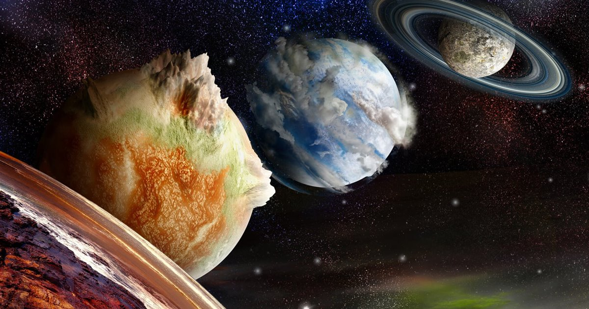
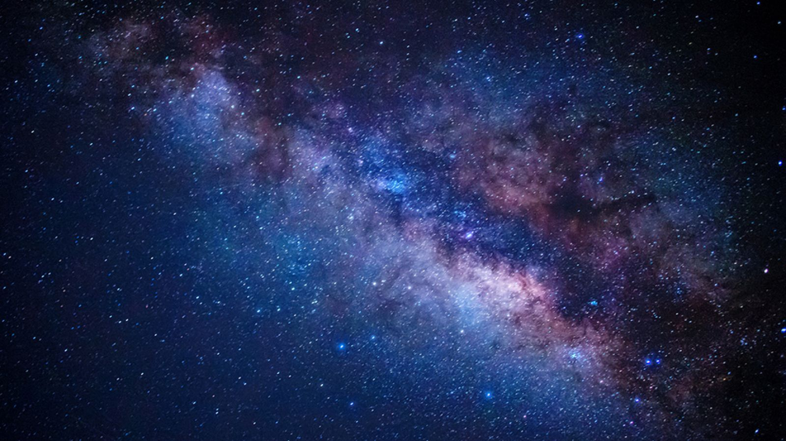

Bienvenidos al Blog
Exploradores del Universo es un espacio dedicado a la divulgación científica sobre astronomía, astrofísica y la exploración espacial. Aquí encontrarás artículos sobre los últimos descubrimientos, teorías fascinantes y la tecnología que nos permite conocer mejor el cosmos.
Últimos artículos
A continuación, te presentamos una selección de nuestros artículos más recientes. Desde la exploración de planetas lejanos hasta los misterios de la materia oscura, descubre cómo la ciencia sigue desvelando los secretos del universo.
- Descubriendo nuevos exoplanetas - ¿Cuántos mundos más existen ahí fuera esperando ser descubiertos? 
- El misterio de la materia oscura - Una de las grandes incógnitas del cosmos. 
- Exploración de Marte: Perspectivas futuras - ¿Cuándo llegará el ser humano al planeta rojo?
¿Te apasiona la astronomía?
Si te fascina el universo tanto como a nosotros, suscríbete a nuestro blog para recibir las últimas actualizaciones y artículos directamente en tu lector de RSS. También puedes seguir nuestro podcast para escuchar entrevistas con expertos y discusiones sobre los temas más apasionantes de la astronomía.